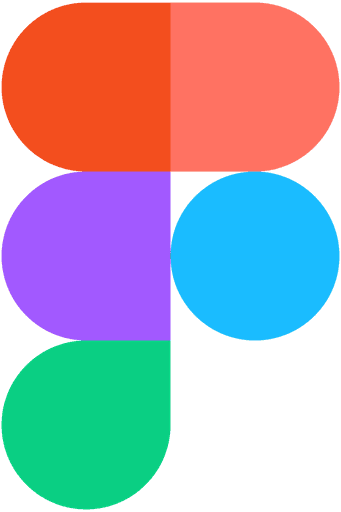
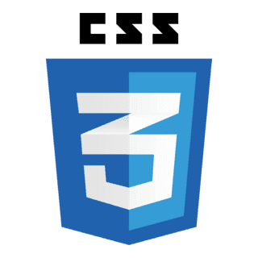

Hi, I'm Amal.
A UX/UI Designer.
I create intuitive digital experiences through thoughtful research, interaction and visual design.
View my workOpen to junior UX/UI roles & LIA



Selected work(2025–2026)

Internship
Canopy — UX/UI Design
From mood board to final UI, independently, at WebRay Studio

Independent
FitFlow — Class booking app
A concept booking flow simplified from 6 steps to 3

School
Volo Nordic Hotel — Mobile booking
User testing showed the booking flow was intuitive and easy to follow

Independent
Accessibility Design
An audit and redesign guided by WCAG 2.1 AA
Skills
- User research
- Interviews & surveys
- Card sorting
- User flows
- Wireframing
- Prototyping
- UI design
- Design systems
- Visual & graphic design
Tools
- Figma
- Adobe XD
- Miro
- Photoshop
- Illustrator
- InDesign
- HTML
- CSS
- JavaScript
- Notion
- Canva